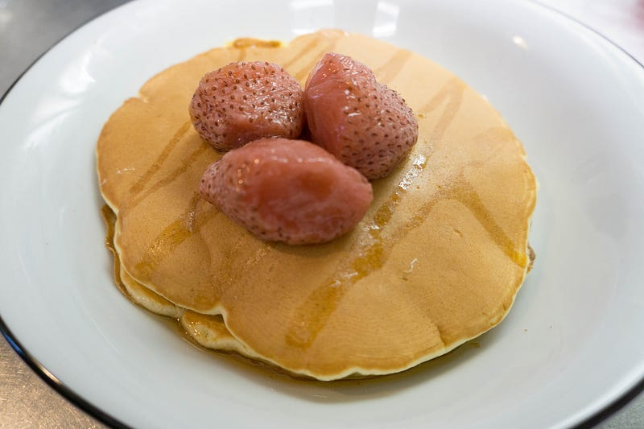
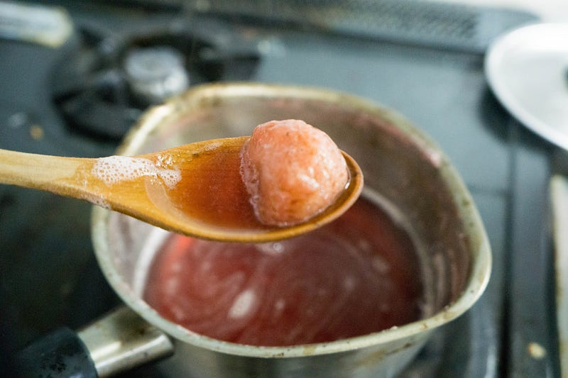
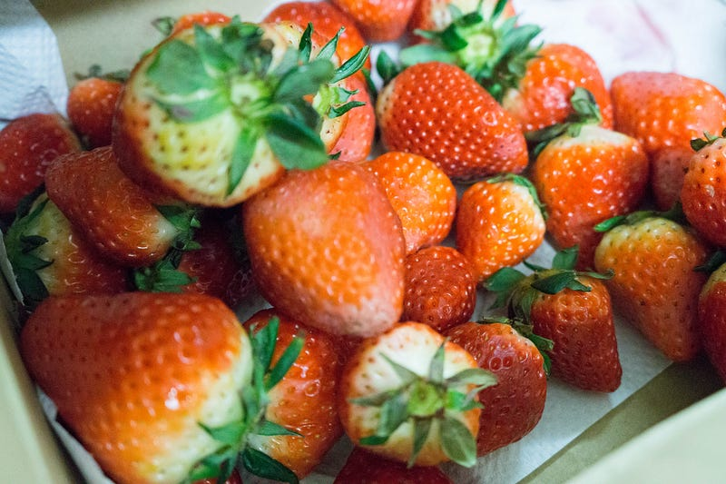
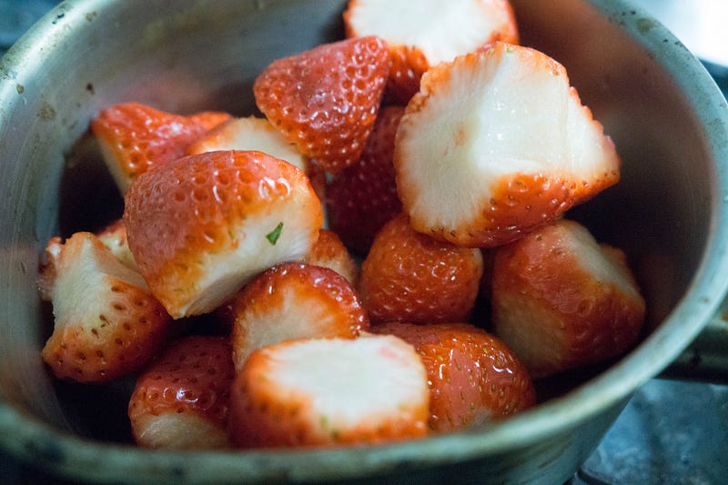
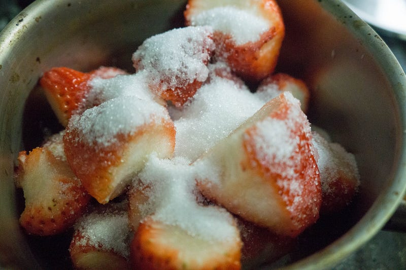
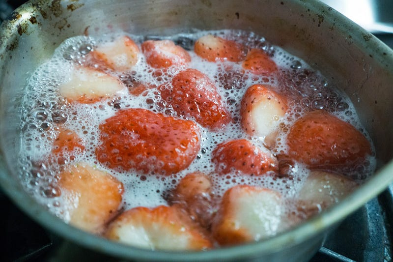

イチゴのコンポート
イチゴのコンポート
妻の実家から大量にイチゴが送られてきたので悪くなる前にコンポートにした。


前回はこちら
東京のスーパーで売ってるイチゴパックのゆうに5，6個分のイチゴが送られてきたのです。

すごく嬉しいけど、いくらうちの子供達がイチゴが好きでもこのイチゴが悪くなる前に食べるのは絶対無理だし、というかすでに少し悪くなり始めてるし！ってことでおいしいうちにさっさと加工することにした。
まぁ悪くなるって言ったってまだ全然美味しい。いわゆる出荷用ではないヤツなのでその分少しずつ悪い部分がある程度。とりあえず加工するなら思い切ってちょっと悪くなってるところは切っちゃう。

砂糖を入れる。ジャムを作る場合は重量の半分くらいの砂糖を使うけど、今回は朝食に出してるフルーツポンチにいれたいので、砂糖は控えめ。この量に対して約30%の重量の砂糖を入れて、その汁を使い回して3回に分けて煮た。これで数日は持つと思うけど、長期保存の場合はガッツリ砂糖をいれたほうがいい。

呼び水として少量の水を入れ、弱火で煮る。イチゴから結構汁でるのでひたひたにする必要はない。高さの半分くらいで充分。
イチゴ、自分ももちろん好きだけど、イチゴを加工してるととにかくイチゴの匂いがスゴいのを身につまされる。甘い。部屋中、いや、家中が甘い匂いになる。最初はおいしそう！と思うけど、しばらく嗅いでいると甘い匂いでむせそうになる。自分はきっとケーキ屋さんにはなれない。

イチゴは火を通すとだんだん赤い色が抜けてくる。今回は冒頭の写真のような色になったところで火を入れるのをやめ、消毒したタッパーに汁ごと保存した。汁と一緒に保存しているとまたイチゴに色が戻るよ！
あとイチゴは煮てると灰汁がボチボチでる。取ったほうがなめらかになるし、みてくれもいいんだけど、自分はこの灰汁の味も嫌いじゃないので、今回は一緒に保存とした。
砂糖の量がこれだけ少ないとあっさり、すっきりな味付けになるので「お菓子」という味はしない。ちょうどいい感じでできた。
というわけでこれから数日は朝このコンポートを食べることになりそう。
次回はこちら